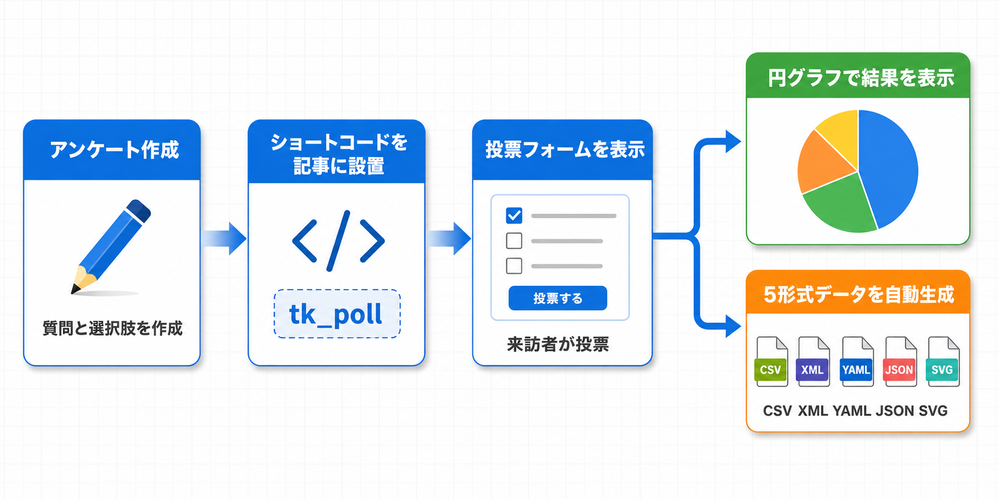
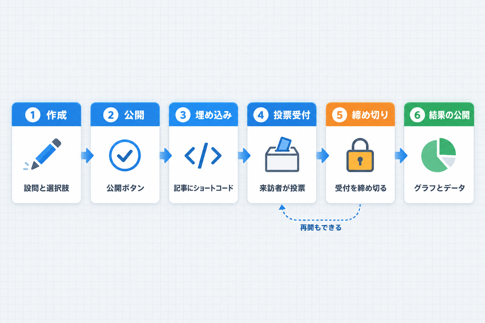

Kashiwazaki SEO Poll マニュアル

Kashiwazaki SEO Poll は、WordPress の記事に投票（アンケート）を設置し、集まった結果を円グラフと表で公開するプラグインです。集計結果は「データセット」として専用ページにまとめられ、CSV・XML・YAML・JSON・SVG の5つのファイル形式でダウンロードできます。検索エンジン向けの構造化データ（Dataset）も自動で出力します。
このマニュアルでは、管理画面とサイト上に表示されるすべての画面・項目・ボタン・メッセージを、画面写真付きで説明します。はじめて使う方は「導入と最初の設定」から順に、特定の機能だけを知りたい方は左のメニューから該当ページを開いてください。
このマニュアルの読み方
各ページは「その画面で何ができるか → 画面の地図 → 項目ごとの説明 → 表示されるメッセージ → よくある使い方」の順に並んでいます。画面写真はクリックすると拡大できます。
できること
投票を作って記事に載せる
設問と選択肢を入力し、ショートコード [tk_poll id="123"] を記事に貼るだけで投票フォームが表示されます。単一選択・複数選択に対応し、同じ接続元・同じブラウザからの二重投票を防ぎます。
投票数の編集と受付の締め切り
管理画面で選択肢ごとの投票数を直接書き換えられます。投票の受付はいつでも締め切り（ロック）・再開でき、締め切り中の記事にはグラフと詳細ページへのリンクだけが表示されます。
データセットとして公開
集計結果は /datasets/ 以下の専用ページに自動で公開され、5つのファイル形式でダウンロードできます。構造化データと専用サイトマップも出力されます。

データセットの一生
このプラグインでは、1つの投票（設問・選択肢・集計結果のまとまり）を「データセット」と呼びます。データセットは次の6つの段階をたどります。締め切った後でも、受付を再開すれば再び投票を集められます。

| 段階 | すること | 説明しているページ |
|---|---|---|
| 1. 作成 | 設問（タイトル）・投票形式・選択肢を入力する | データセットの作成 |
| 2. 公開 | 「公開」ボタンを押す。公開すると投票フォームとデータセットページが使えるようになる | データセットの作成 |
| 3. 埋め込み | ショートコードをコピーして記事に貼る | ショートコードと掲載ページ |
| 4. 投票受付 | 来訪者が投票する。グラフはその場で更新される | 記事での表示と投票 |
| 5. 締め切り | 受付を締め切る（ロック）。必要なら投票数を手で直す | 投票の受付と締め切り・投票数の確認と編集 |
| 6. 結果の公開 | グラフ・表・データファイルで結果を見せる | グラフとダウンロード・データセットページ |
画面の地図
管理画面の左メニューには「Kashiwazaki SEO Poll」が1つだけ表示されます。クリックすると「データセット一覧」が開き、上部のタブで「基本設定」に切り替えられます。

| 画面 | 開き方 | 主な内容 |
|---|---|---|
| データセット一覧 | 左メニュー「Kashiwazaki SEO Poll」 | データセットの一覧、受付状態と総投票数、受付の締め切り・再開 |
| 編集画面（新規追加） | 一覧の「新しいデータセットを追加」、またはタイトルをクリック | 設問と選択肢、投票数、データセット情報、ショートコード、受付と集計 |
| 基本設定 | 一覧の上部タブ「基本設定」（管理者のみ） | 構造化データ、データセットページの表示、メンテナンス |
| 記事の投票フォーム | ショートコードを貼った記事 | 投票、グラフ、ダウンロード、詳細ページへのリンク |
| データセットページ | /datasets/ 以下 | 一覧、詳細（集計表）、形式別ページ、ファイルのダウンロード |
SEO / GEO における強み
投票結果を「調査データ」として扱える形で公開できる点が、このプラグインの特長です。
- 構造化データ（Dataset）の自動出力: 投票フォームを置いた記事、データセットの詳細ページ、形式別ページに、データセットであることを示す情報を出力します。検索エンジンや AI がデータの内容・作成者・ライセンスを読み取りやすい構造を作る助けになります。
- 機械が読める5つの形式: 同じ集計結果を CSV・XML・YAML・JSON・SVG で公開します。引用や二次利用がしやすくなる可能性があります。
- 専用サイトマップ: 形式別ページの一覧をまとめたサイトマップを自動で作り、検索エンジンに知らせる手段を用意します。
効果について
構造化データやサイトマップは、検索エンジンがデータを見つけて理解するための手がかりです。検索結果への表示や順位は検索エンジンの判断によるため、効果を保証するものではありません。
動作環境
| 項目 | 内容 |
|---|---|
| WordPress | 5.6 以上 |
| PHP | 7.4 以上 |
| グラフの表示 | 来訪者のブラウザで JavaScript が動くこと。グラフ描画用のライブラリをインターネット上の配信元から読み込みます |
| パーマリンク設定 | 「基本」以外（データセットページの URL を使うため） |
このマニュアルの目次
| ページ | 内容 |
|---|---|
| 導入と最初の設定 | インストールから最初の投票を記事に載せるまで |
| 管理メニューとタブ | 左メニュー、タブ、プラグイン一覧の「設定」リンク |
| データセット一覧 | 一覧の列・行の操作・上部のボタン・通知 |
| データセットの作成 | 編集画面の全体、設問と選択肢 |
| 投票数の確認と編集 | 投票数の表、書き換えのルール、通知 |
| データセット情報 | 詳細な説明・ライセンス・バージョン・キーワード |
| ショートコードと掲載ページ | コピー、掲載中のページ、キャッシュの注意 |
| 投票の受付と締め切り | 受付と集計ボックス、ロック、集計データの全削除 |
| 記事での表示と投票 | 投票前・結果拡大・投票済み・受付終了の表示、1人1回の制限 |
| グラフとダウンロード | グラフの見方、画像の保存、5つの形式 |
| データセットページ | 一覧・詳細・形式別ページ・データファイルの中身 |
| 基本設定 | 構造化データとデータセットページの設定 |
| メンテナンス | 投票制限の解除、サイトマップ、データファイルの一括生成 |
| 構造化データとSEO | どのページに何が出力されるか |
| 自動処理と権限 | 自動で行われる処理、操作に必要な権限 |
| よくある質問 | 運用でよく出る疑問 |
| トラブルシューティング | 症状別の原因と対処 |
| 用語集 | このマニュアルで使う言葉 |